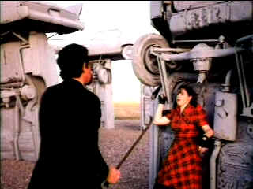

| Omaha (The Movie) SE/ C+,D |
| Versatile Media One/1994/85/FS 1.33 |
Here's one for filmmakers plugging away in
nether reaches of America: Omaha (The Movie). Dan Mirvish's
debut feature makes the most of the Omaha setting for yet another young
man's search for direction.
Light-hearted and sweet centered, playful Omaha pokes
fun at Nebraska's largest city. The Omaha portrayed by Mirvish is easy
satiric fodder, but that doesn't tarnish the brassy innocence of the film.
Charming bits and pieces don't overcome a fairly simplistic script.
Mirvish does get a lot of mileage out of then
Omaha Mayor P.J. Morgan. Sitting on a motorcycle dressed in his best
leather, the mayor presents Omaha highlights; interspersed with the
action, the Omaha commentary is quite winning. It funny because of the
style in which it's juxtaposed against the action. There's a memorable
family photo shoot in the middle of nowhere from the feet up. Give me that
recipe for the Buddhist fire ceremony again. The natural food stores must
be satisfied. And the hand written title placards are pure inspiration. I
don't recall ever seeing it done in this fashion fashion.
 |
|
Face-off at Carhenge. ©
1994 Bugeater
|
So, what do Colombians, Nepal, Haircuts,
Carhenge, kickboxers and Emeralds have to do with each other? They form
the basis of Simon's identity odyssey through Omaha. Perhaps the
Mayor of Omaha could explain it better. Personally, I would have like more
Omaha and less dull jewel pursuit.
Hughston Walkinshaw doesn't add much spark to the
Omaha inspiration. He plays native son Simon with rather mundane
introspection. Jill Anderson is a bundle of dizzy energy and provides many
of the best Omaha moments as Gina, the high kicking Tai-kwan-do gal
with a flare with the scissors and zest for intrigue. She's the Dorothy of
Omaha with quick feet and dogged determination, but no ruby slippers.
I don't even want to speculate on why the
image breaks into pixilized detail in far too many scenes. It adds
an ugly dimension to an otherwise serviceable transfer. Black levels are
decent and it's mostly sharp enough. The transfer is likely limited by the
source material. Shadow detail is also fine. Some soft scenes. Lighting
blows out detail in some instances. Minor color bleeding in some the more
saturated materials. Moments of jitter spring up here and there. There
were some source markings and at least one master tape aberration that
mars one scene momentarily. Mono sound is clear. Bottom line: is it
watchable? Yes. Does the transfer detract from the film? Yes.
An audio commentary is provided by writer/director
Mirvish and Slamdance projectionists Gabe Wardell and Skizz
Cyzyk. The anecdotes are quite winning and funny. Yes, there
is really a Carhenge in Alliance, Nebraska. Mirvish notes that the almost
eight minutes of credit fat was padding for what is a short feature. Yes,
and you can find out the history of Carhenge too |
|
|
|

Selections from the Feature
Archive include articles on Akira Kurosawa, Frank Darabont, Blonde Bimbos, Hollywood Street Gangs, or Vietnam: The Hollywood Pariah, and many
more....
Sturges Emerges

Preston Sturges was Hollywood's resident comic genius for more
than a decade. His movies are timeless. Click on his image to read all
about it.

The Movie Poster
Archive includes extensive poster images from the films of stars like
Susan Hayward, Kirk Douglas, Katharine Hepburn and many more. Our
featured star is William Holden.

Little Fugitive (SE)/A,B+

Remarkable raw filmmaking from Morris Engel. Bodies laid out
end-to-end present a picture of 1950s America. The photography is so startling
that it could actually be broken down into a volume of stills.

 Have you visited
Home Theater
Talk lately? One of the friendliest places on the Net for Home
Theater and DVD discussion, you can get help for installation problems or
simply share your opinions with other Vidiots. Have you visited
Home Theater
Talk lately? One of the friendliest places on the Net for Home
Theater and DVD discussion, you can get help for installation problems or
simply share your opinions with other Vidiots.
 The Cinematheque is a cultural,
arts organization that programs year-round specialty film series at the
newly renovated, landmark 1922 Egyptian Theatre on
Hollywood Boulevard! The Cinematheque is a cultural,
arts organization that programs year-round specialty film series at the
newly renovated, landmark 1922 Egyptian Theatre on
Hollywood Boulevard!

Mystery writer Fred Hunter digs into classic films on DVD. Check out his
insightful reviews at The Classics on DVD.
MRQE
Find reams of movie and DVD reviews at the Movie Review Query
Engine, a index of reviews appearing on the Internet
.
A new Films on Disc space dedicated to purging accumulated home theater
angst and other movie related frustrations, with a measure of praise to
balance the vitriol. The first column takes on:
Inserts and the Pop-Up Window |